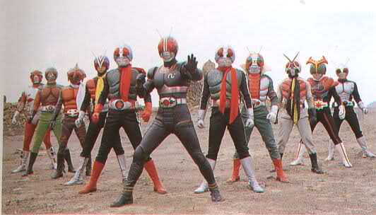
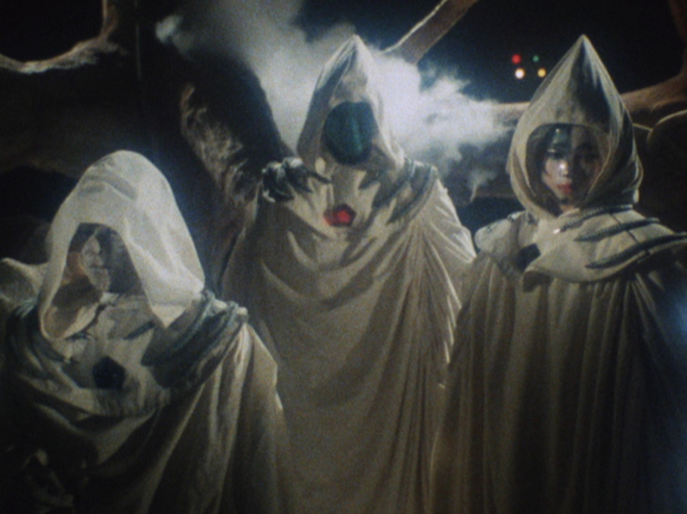
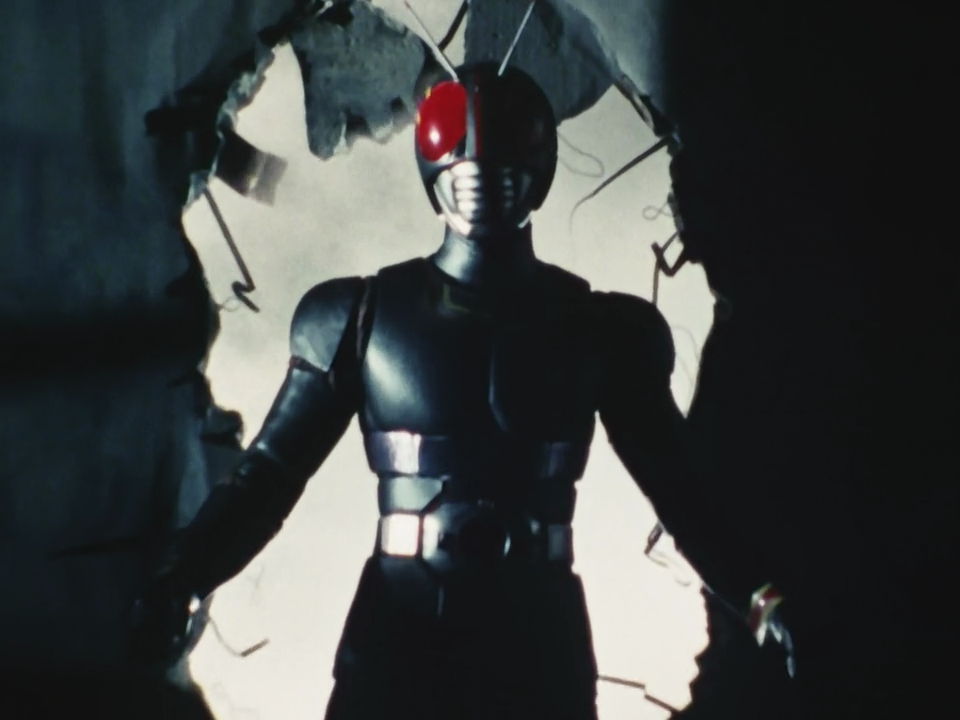
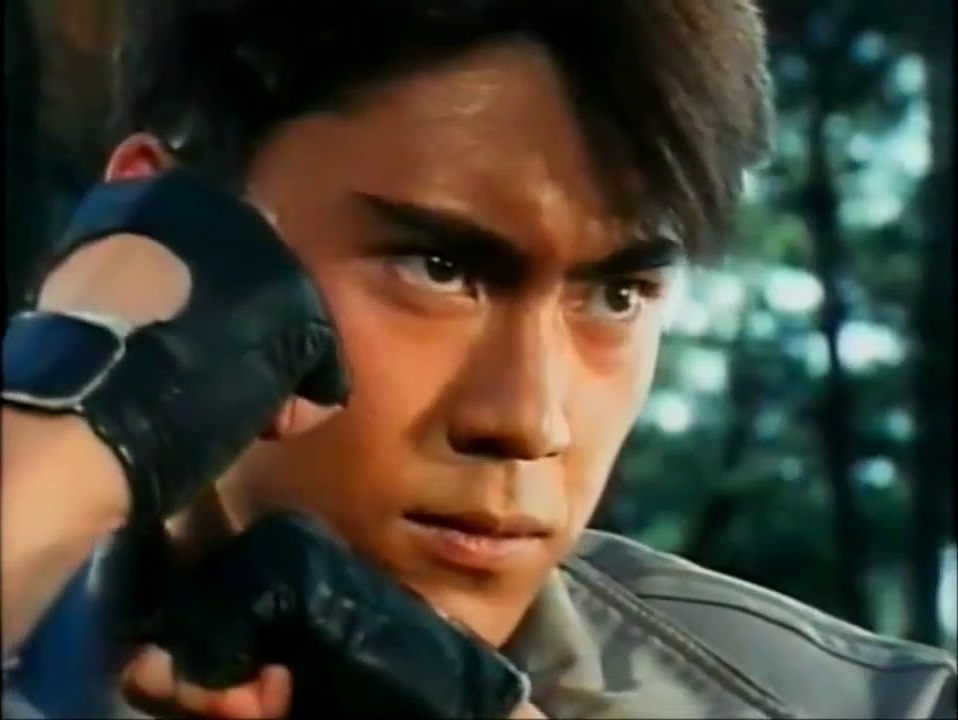
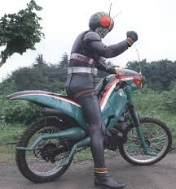
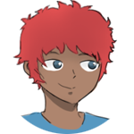

Opnião da equipe: GARO
Saiba a opinião da equipe sobre a série do cavaleiro da armadura dourada
.png)
Opnião da equipe: KAMEN RIDER WIZARD
Saiba a opinião da equipe sobre Wizard
.png)
Review: KAMEN RIDER BLACK
Análise sobre o antigo e classico Kamen Rider Black
Review: Kamen rider Black
Com grande estilo base para sucesso, Kamen rider Black chega em 4 de outubro no ano de 1987, trazendo consigo uma atmosfera sombria e personagens interessantes, Black consegue trazer uma narrativa com mais mistérios e mais desenvolvimentos que as séries passadas.

A série começa quando Kotaro Minami(Issamu Minami aqui no Brasil) e Nobuhiko Akizuki são capturado por uma organização do mal chamada Gorgoms, uma organização secreta do mal onde eles são influentes no mundo e agem por baixo dos panos, onde tem intenções malignas e atraem pessoas importantes com a promessa de terem a vida eterna, mas essa promessa vem com a penalidade de virar um monstro do mal, mas a ganância das pessoas vão além disso...

Após eles ser capturado, eles entram em uma cirurgia para virar um ciborgues do mal usado para o mal, mas durante o processo de apagar as memórias controlar a mente dele, o pai deles consegue interceder e apenas Kotaro consegue escapar e rouba uma moto chama de "patrol hopper" para ajudar na fuga dele. Numa cena de perseguição num beco, 3 personagens de roupão branco atacam ele num beco, e num ataque que Kotaro fica ferido, ele acidentalmente se transforma por um breve momento em black sun e luta de volta. Ele consegue escapar, mas os Gorgons continuam de olho e perseguindo ele. Kotaro consegue ir pra casa e avisar as pessoas, mas fica em vergonha pois não conseguiu resgatar o seu irmão, e percebe que seu pai foi capturado. após procurar ele e descobrir que os Gorgons controlam ele a muito tempo, o pai dele é mantido em cativeiro por um monstro e Kotaro vai salvar ele.

Kotaro consegue chegar no pai dele, mas ele é morto e jura ali mesmo que irá acabar com os gorgoms, e entra a cena dele se transformando intencionalmente para usar a armadura do KAMEN RIDER BLACK, aqui chamado de Black sun pelos gorgoms. e assim começa a jornada de vingança de Black...

Com uma introdução dessas, o rumo da série é ditado. Onde eles apresentam um problema, o vilão perde e os Gorgoms procuram outro jeito de destruir o BLACK. Mas essa série faz algo que outros Kamenr riders falham, ele explora essa narrativa pra as vezes quebrar ela e fazer contruções de episódios que são únicas e pro padrão da época. Menção honrosa pro episódio que teve um inimigo que Kotaro não conseguia derrotar, e teve que treinar e aprender outro ataque para derrota-lo. Esse episódio teve uma construção e um desenvolvimentos incriveis, um dos melhores episódios da série até.

Este review não está com o intuito de explorar e analisar todos os episódios, mas o intuito de apresentar pontos positivos da série e incenvivar você a ler. Todos os episódios se encontram legendados e dublados no youtube e na internet por aí. uma ressalva pra playlist no youtube da série legendada. link abaixo:
Se eu me deixar levar isso fica enorme e gigante e vou acabar dando spoiler... então é melhor parar por aqui, obrigado por lerem!

redator da vez:
samuloko
"SE EX AID É BOM ENTÃO EU SOU RICO!"
direitos reservados a: @samuloko_